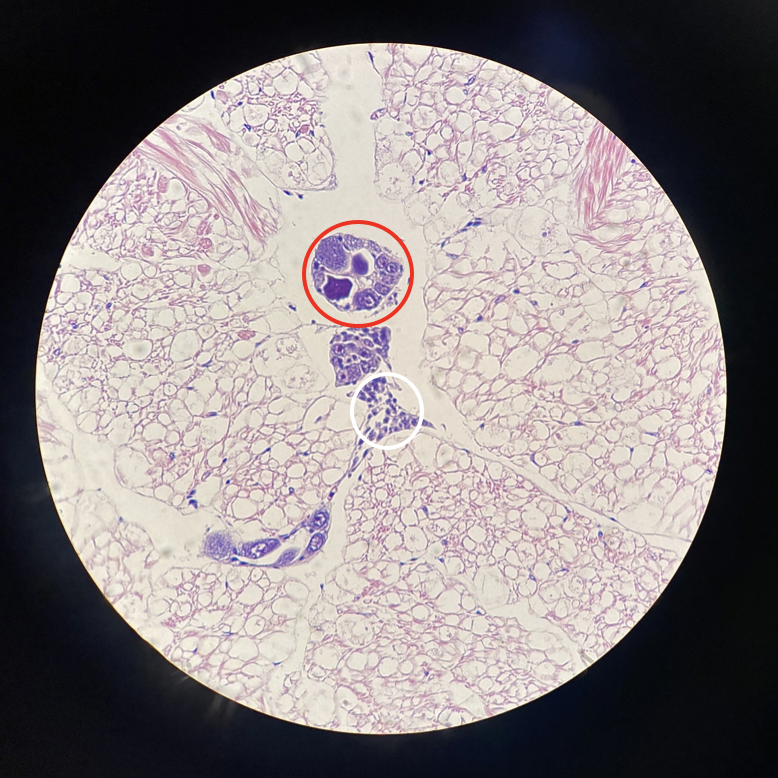
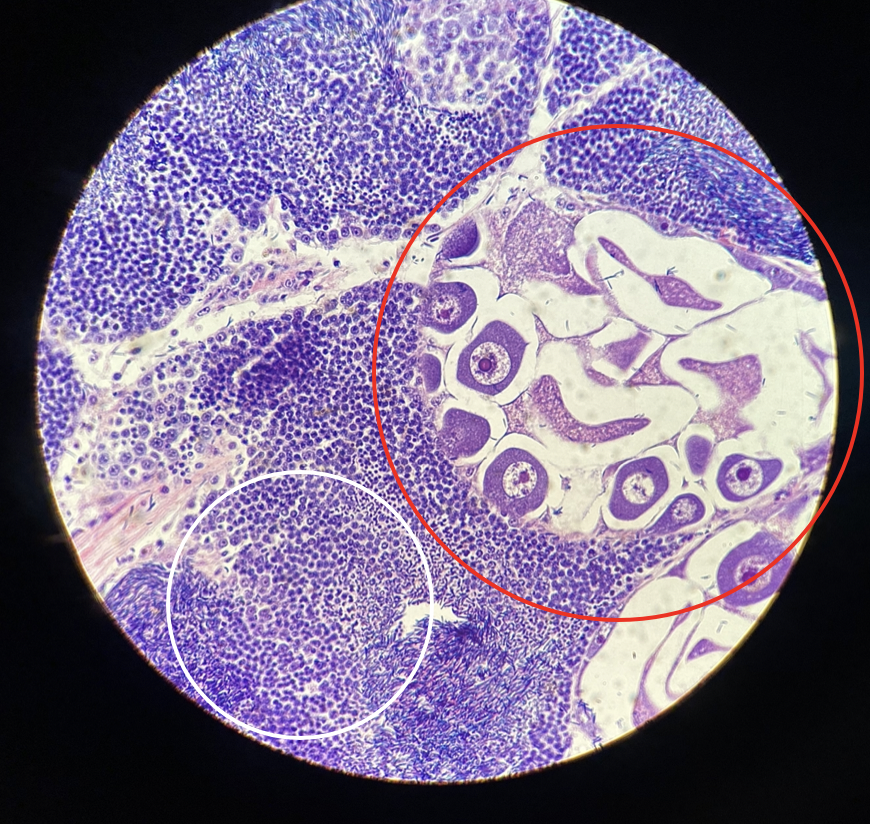
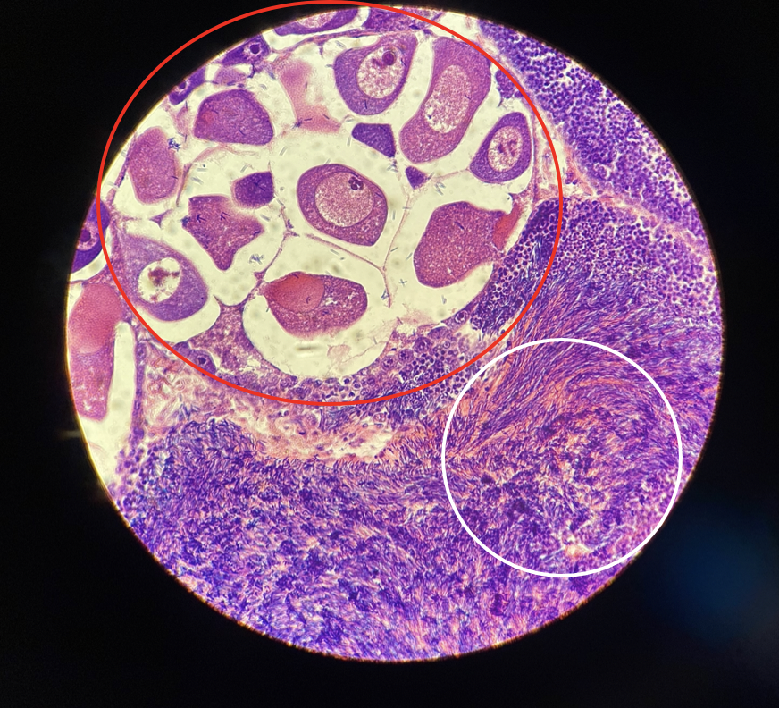

Reading Reproductive Histology in Bivalves
A self-guided, hands-on tutorial for new lab members and undergraduates. Learn to look at a stained slice of clam gonad and answer two questions: What sex is it? and How far along is it?
How to use this tutorial
Reproductive (gonad) histology is one of the most useful — and most intimidating — skills in shellfish biology. The good news: the logic is simple and repeatable. By the end of this tutorial you will be able to pick up an unlabeled gonad slide and reason your way to a sex and a maturity stage, the same way researchers do in the lab.
Work through the sections in order. Each one builds on the last. Diagrams explain the structures, real stained slides show you what they actually look like, and short self-checks let you test yourself before moving on. Nothing is graded and nothing is sent anywhere — this all runs in your browser.
What you'll be able to do
- Explain what a bivalve gonad is and where it sits in the animal.
- Read an hematoxylin & eosin (H&E) slide and name the major structures.
- Distinguish a female gonad (oocytes, follicles) from a male gonad (acini packed with sperm).
- Assign a maturity stage using a published staging scheme.
- Recognize a simultaneous hermaphrodite, where one animal carries both.
- Avoid the most common rookie mistakes.
Why reproductive histology matters
Most bivalves give away nothing about their reproduction from the outside. A geoduck shows no color, size, or shape difference between the sexes — the only reliable way to know its sex, short of watching it spawn, is to take a piece of gonad tissue and look at it under a microscope. That single limitation drives a surprising amount of shellfish science and aquaculture.
For aquaculture
Hatcheries need eggs and sperm at the same time. But in a tank of brood animals, some will spawn early, some late, and some not at all. Knowing the sex ratio and the maturity stage of the broodstock lets a hatchery time a spawning event, balance males and females, and protect genetic diversity — if only a few females fertilize all the eggs, the offspring become inbred and fragile. Histology is how that hidden state is measured.
For science
Staging tells you when in the reproductive cycle an animal was sampled. That is the backbone for studying spawning seasons, the effects of temperature or ocean acidification on reproduction, and the search for molecular biomarkers that might one day let us sex an animal from a drop of hemolymph instead of killing it.
Bivalve reproductive biology in five minutes
Where is the gonad?
In clams the gonad is not a tidy, discrete organ like an ovary in a mammal. It is a diffuse tissue that spreads through the body around the visceral mass and digestive gland. When you slice and stain it, you are looking at a field of small sac-like compartments — follicles (in females) and acini (in males) — embedded in connective tissue. Gametes develop inside these compartments.
Gametogenesis: gametes are built in stages
Gametogenesis is the production of gametes. It runs as an assembly line, and that is exactly why we can "stage" it — different time points look different under the microscope.
Females — oogenesis
- Oogonia — tiny stem cells lining the follicle wall.
- Primary & secondary oocytes — grow larger; often pear-shaped while still attached to the wall by a stalk.
- Mature ova — large, round, and free in the follicle center, each with a big nucleus.
Males — spermatogenesis
- Spermatogonia — stem cells on the acinus wall.
- Spermatocytes & spermatids — successively smaller dividing cells moving inward.
- Spermatozoa — tiny, dense, packed in the center, often in radial bands with tails pointing to the lumen.
Not every clam has two sexes
Bivalves use several reproductive strategies. The two we focus on bracket the range:
| Strategy | What it means | Example here |
|---|---|---|
| Dioecious | Separate sexes — an individual is male or female | Geoduck Panopea generosa |
| Simultaneous hermaphrodite | One individual carries mature male and female tissue at once | Basket cockle Clinocardium nuttallii |
| Mostly dioecious (sometimes hermaphrodite) | Usually separate sexes, occasional exceptions | Manila clam, Pacific oyster |
From clam to slide: the H&E workflow
A slide doesn't come from the animal directly. The tissue is processed so that a microscope can resolve individual cells. Knowing the steps helps you read — and trust — what you see.
- Sample a small block of gonad tissue (a few millimeters across) from around the visceral mass.
- Fix it in a chemical fixative to lock the cells in place and stop decay. (Both studies here used fixation before processing; poorly fixed tissue can be unreadable — more on that later.)
- Embed, section, and mount — the tissue is sliced into ribbons only a few microns thick and laid on a glass slide.
- Stain with hematoxylin and eosin.
What the two stains do
H&E is the workhorse stain in histology, and the color code is the same on every slide you will ever read:
Hematoxylin → purple / blue
- Binds acidic material — above all DNA in nuclei.
- So nuclei look purple-blue. Sperm, which are almost pure nucleus, appear as a dense purple haze.
Eosin → pink / red
- Binds basic material — mostly cytoplasm and connective tissue proteins.
- So cytoplasm and the body of an egg look pink, with a purple nucleus inside.
Magnification: zoom for different jobs
The studies imaged slides at several magnifications, and each answers a different question:
| Power | What it's good for |
|---|---|
| 4× / 10× | The big picture — how much of the field is follicle/acinus vs. connective tissue, and how full the compartments are. Most staging starts here. |
| 40× | Cell-level detail — measuring an oocyte, checking whether sperm are arranged in bands, telling a spermatid from a spermatozoon. |
Telling the sexes apart
This is the first question on any slide. The rule is short:
The female follicle, labeled
The male acinus, labeled
Female — look for
- Large, round, individually visible cells.
- Pink cytoplasm with one big purple nucleus each.
- Some attached to the wall (pear-shaped), some free in the center.
- You can count and measure them.
Male — look for
- A dense, fine, purple mass — too small to count.
- Radial bands / whorls in ripe acini.
- A size gradient: bigger cells on the wall, tiny sperm in the center.
- Little to no pink inside a full acinus.
Staging female development — the geoduck scheme
Once you know it's female, the second question is how ripe? Crandall & Roberts staged 70 geoduck gonads sampled weekly across one winter. They built a fine-scale, 7-stage scheme for females based on two measurable things:
- Secondary (2°) oocyte size, in microns (µ) — bigger eggs = more mature.
- Follicle size and how much of the field is follicle vs. connective tissue.
| Stage | Defining characteristics |
|---|---|
| 1 | No secondary oocytes, or 2° oocytes only ~5–15 µ |
| 2 | Follicles ~200–300 µ; 2° oocytes ~20–35 µ |
| 3 | Follicles ~300–500 µ; 2° oocytes ~20–35 µ |
| 4 | Very few follicles; 2° oocytes ~45–60 µ |
| 5 | More follicles than Stage 4; 2° oocytes ~50–75 µ |
| 6 | More connective tissue than Stage 7; 2° oocytes ~65–85 µ |
| 7 | Almost no connective tissue, mostly follicles; 2° oocytes ~65–85 µ |

At 40× the secondary oocytes measure about 70 µ. At 10× the field is wall-to-wall follicles with almost no connective tissue between them. What stage, roughly?
Staging male development — the geoduck scheme
Males can't be staged by "egg size" — sperm are all tiny. Instead, Crandall & Roberts used two coverage measures:
- How much of the tissue is acini (vs. connective tissue) — and how large the acini are.
- What fraction of each acinus is filled with spermatids/spermatozoa — i.e., how "full" it is.
| Stage | Defining characteristics |
|---|---|
| 1 | Mostly connective tissue; small acini; ~<5% spermatids per acinus |
| 2 | Larger acini than Stage 1; ~5–10% spermatids per acinus |
| 3 | More connective tissue than Stage 4; smaller acini than Stages 4–5; ~50% spermatids per acinus |
| 4 | More connective tissue than Stage 5; large acini; ~50–75% spermatids per acinus |
| 5 | Very little connective tissue; large acini; ~75–90% spermatids per acinus |

The acini are large and there is very little connective tissue left. At 40× each acinus looks roughly 80% packed with banded spermatozoa. Stage?
The hermaphrodite twist — the basket cockle
Now the exception that makes you a careful reader. The basket cockle (Clinocardium nuttallii) is a simultaneous hermaphrodite: a single animal carries both male and female tissue at the same time, in separate follicles sitting side by side in the same section.
The cockle 5-grade scale
Lawson & Roberts (following Gallucci & Gallucci 1982) used a single 1–5 grade scale applied to each gonad type. Notice it runs further than the geoduck scheme — it also covers spawned and spent tissue.
| Grade | Female tissue | Male tissue |
|---|---|---|
| 1 underdeveloped | Oogonia + a few oocytes line the follicle; follicles generally collapsed. | Spermatogonia and spermatocytes partially line the wall; follicles generally collapsed. |
| 2 developing | Rounded and many pear-shaped oocytes attached to the wall; 1–2 detached; follicle walls breaking down so follicles look larger. | Spermatocytes and spermatids predominate; <⅓ of the follicle filled with spermatozoa. |
| 3 ripe | Some oocytes still attached; many now free within the follicle. | Follicle >⅔ full of spermatozoa, arranged in characteristic bands. |
| 4 recently spawned | Occasional free oocyte; many remaining oocytes undergoing karyolysis & cytolysis (breaking down). | Follicle collapsed with some residual spermatozoa; a few spermatids still on the wall. |
| 5 spent | Hard to tell the sexes apart. Follicles collapsed; only rare residual eggs or sperm reveal a follicle's sex; pigmented cells present. | |
See it on real slides
In these cockle sections the male gonad is circled in white and the female gonad in red — both in the same animal.



Relative maturity — a real finding you can use
Because both sexes sit in one animal, you can ask whether they ripen in step. Lawson & Roberts found that when the two differed, the male gonad was usually ahead of the female, and that larger cockles (>3.5 cm) showed more uniform, predictable maturity between the two. Practical upshot: the female gonad is the more conservative indicator — if the female tissue is ripe, the male almost certainly is too.
Cautions & common pitfalls
Histological staging is powerful but human. Keep these in mind so your calls are honest and reproducible.
Staging is partly subjective
The cutoffs between stages are drawn by people. Crandall & Roberts explicitly note their stage boundaries were set subjectively. That's normal — but it means you should stage a whole set with the same eyes and same criteria, ideally without knowing which week or treatment a slide came from (to avoid bias), and have a second reader check tricky ones.
Know which scheme you're using
A fine-scale scheme (designed to catch small weekly changes) and a broad-scale scheme (immature → ripe → spent) use the same numbers to mean different things. A geoduck "Stage 3" on the fine winter scheme is fairly immature; a "Stage 3" in much of the literature is mature. Never compare stage numbers across schemes without checking the definitions.
Fixation and section quality
Poorly fixed tissue can be distorted or unreadable — Crandall & Roberts flagged several specimens as incorrectly fixed and had to set them aside. Before you stage, ask: is this section intact, or am I looking at an artifact (a tear, a fold, shrinkage)? Don't over-interpret damaged tissue.
Size and age are clues, not proof
It's tempting to guess ripeness from how big the animal is. In geoduck, Crandall & Roberts found no reliable correlation between weight or length and stage at their fine time scale. In cockle, size was a better predictor (bigger = more developed), but still a tendency, not a guarantee. The slide is the ground truth; morphometrics only support it.
Putting it together
Here is the whole workflow on one card. Run every new slide through it.
Capstone self-check
Five mixed questions. No peeking at earlier sections first — see how much stuck.
Glossary & sources
Glossary
- Acinus
- Sac-like compartment of the male gonad where sperm develop (plural: acini).
- Connective tissue
- Packing tissue between follicles/acini; abundant when immature, scarce when ripe.
- Cytolysis / karyolysis
- Breakdown of a cell / its nucleus — seen in spawned, degrading oocytes.
- Dioecious
- Having separate sexes; an individual is male or female (e.g., geoduck).
- Eosin
- The pink/red H&E dye that stains cytoplasm and connective tissue.
- Follicle
- Sac-like compartment of the female gonad where oocytes develop.
- Gametogenesis
- Production of gametes — oogenesis (eggs) and spermatogenesis (sperm).
- Gonad
- The reproductive tissue; in bivalves it is diffuse, around the visceral mass.
- Hematoxylin
- The purple/blue H&E dye that stains nuclei (DNA).
- Lumen
- The open central space of a follicle or acinus.
- Oocyte
- A developing egg cell; "secondary" (2°) oocytes are the larger, later ones used for sizing.
- Simultaneous hermaphrodite
- One animal bearing functional male and female tissue at the same time (e.g., basket cockle).
- Spermatid / spermatozoon
- Late-stage / final male gametes; their dense nuclei make ripe acini read solid purple.
- Spent
- Post-spawning gonad, largely emptied and collapsed.
- Staging
- Assigning a maturity rank to a gonad using defined histological criteria.
Source reports
This tutorial is built from two Roberts Lab reproductive-maturation studies. The staging tables, criteria, and all histology images come directly from them:
- Crandall, G., and S. B. Roberts. Characterization of Reproductive Maturation in Geoduck Clams (Panopea generosa). Roberts Lab Current Findings. — the geoduck 7-stage female and 5-stage male schemes and slide images.
- Lawson, D., and S. B. Roberts. Characterization of Reproductive Maturation in the Basket Cockle, Clinocardium nuttallii. Roberts Lab Current Findings. — the 5-grade hermaphrodite scale (after Gallucci & Gallucci 1982), relative-maturity findings, and cockle slide images.